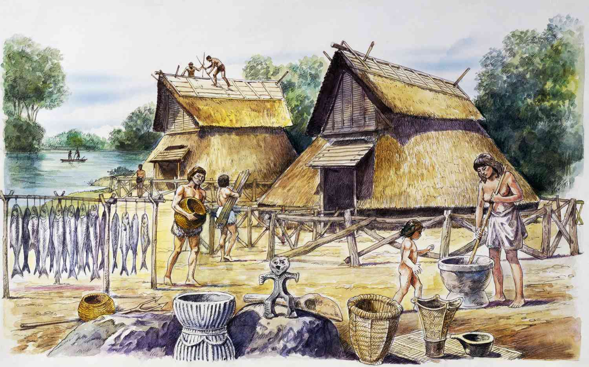
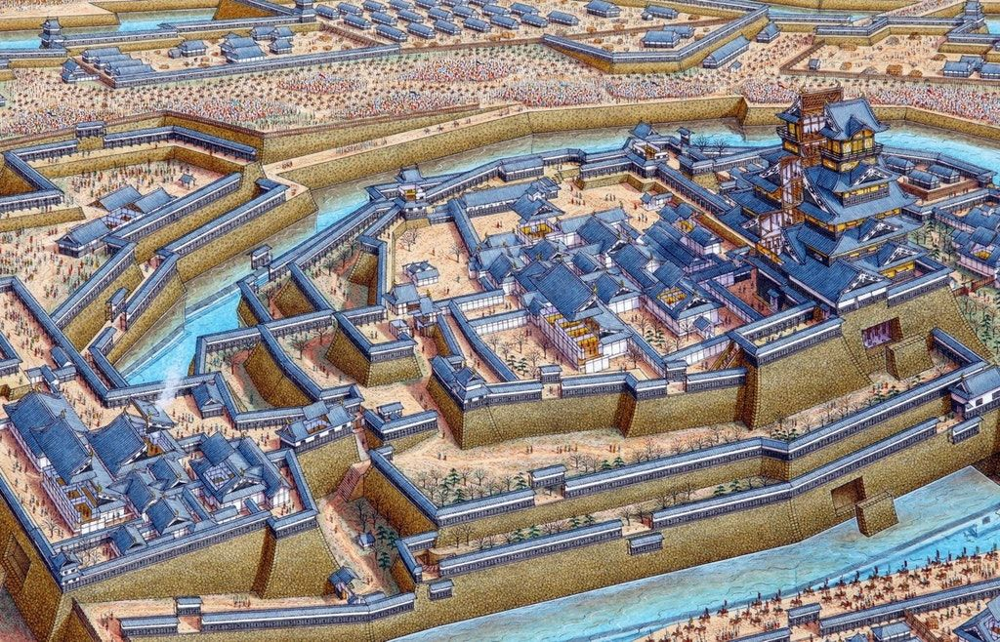
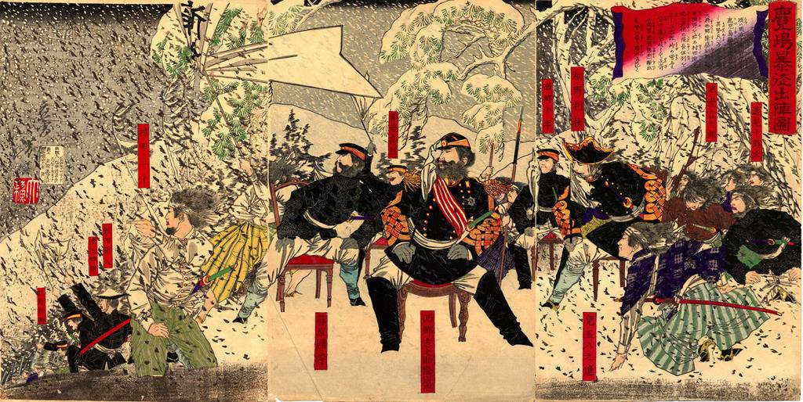
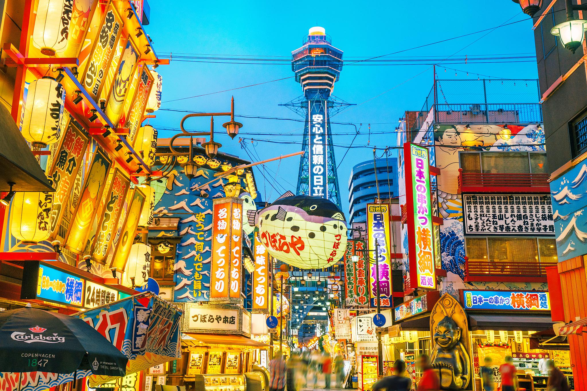

당신의 특별한 오사카 여행을 보다 편하게 누릴 수 있도록.
당신의 특별한 오사카 여행을 보다 편하게 누릴 수 있도록.
깊은 역사를 지닌 오사카. 그 역사를 간략하게 이야기 해드립니다.
|  | 1장 : 교역의 장이 시작되다. 5세기경, 일본의 경제-정치의 중심지로 발돋움한 오사카는 초창기에 작은 항구였습니다. 현재 오사카시 주오구 부근으로 추정하는 “나니와쓰 항구가 오사카의 시작이였습니다. 나니와쓰 항구가 개항하면서, 최첨단 기술과 불교가 일본으로 건너올 수 있게 되었습니다. 6세기 쇼토쿠 태자가 시텐노지를 건립하였고 7세기 고토쿠 천황은 오사카로 천도했습니다. 그리고 이후에 교토-나라-교토-가마쿠라-에도로 수도가 옮겨지게 됩니다. 이러한 수도를 옮기는 과정 속에서도 오사카는 제2의 도시 역할을 수행하며 발전해왔고, 중요한 외교창구의 역할을 하였습니다. 일본의 수도가 교토로 이전된 794년 이후의 시기를 헤이안 시대라고 불렀습니다. 이때당시 융성한 불교의 발전으로 인해 수많은 사원이 교토, 오사카 등지에 건립되었고 불교문화가 꽃을 피웠습니다. |
| 2장 : 막부 시기의 오사카 1185년 미나모토노 요리토모가 가마쿠라 막부를 수립하고 정권을 쥐게되는데, 이 이후 일본열도는 전란이 자주 발생하는 전국시대로 접어들게됩니다. 이런 막부시기의 오사카는 전란으로 인해 황폐화 되었습니다. 16세기 경에 등장한 오다 노부나가는 이런 상황에서도 오사카의 중요성을 잘 알고있었습니다. 그는 오사카를 점령하면 일본과 일본 주변국을 정복할 수 있을 것이라는 생각을 가지고 10여년에 걸쳐 오사카 지역의 이시야마 혼간지를 공격했습니다. 그가 오사카를 점령한 이후 후계자인 도요토미 히데요시는 오사카를 거점으로 삼았습니다. 유명한 오사카 성도 1583년에 도요토미 히데요시가 지은 성입니다. 하지만 도요토미 히데요시의 사후 세키가하라 전투에서 동군 즉, 도쿠가와 이에야스가 승리하면서 도요토미씨는 멸족 당하게 되고, 주요 거점도 에도(현재의 도쿄)로 옮겨갔습니다. 이때 수립된 막부가 마지막 막부인 에도 막부이며, 일본은 쇄국의 길로 들어서게 됩니다. |
 |
|  | 3장 : 유신 이후의 근대적 변화 1868년 막부의 권력을 천황이 회복하고(왕정복고) 머리를 자르고 근대적인 개혁을 진행하는 메이지 유신이 단행되었습니다. 도쿄로 천도한 이후 도쿄는 경제도시로 크게 성장해갔지만 오사카는 정체되어 있었습니다. 그래서 이때 오사카는 공업도시로의 전환을 시도하게됩니다. 오사카의 공업지대는 매연을 뿜어대었고, 19세기에‘스모그의 도시’라는 악명이 붙게 됩니다. 공업지대의 매연이 마치 멘체스터와 같아, ‘동양의 멘체스터’ 불명예스러운 별명도 가지게 됩니다. |
| 4장 : 2차 세계대전 그 이후 2차 세계대전동안 오사카 도시 전체의 약 1/3이 폭격에 의해 괴멸당했습니다. 수많은 상업지구, 공업지구가 폭격을 당했습니다. 결국 천황이 항복선언을 하며, 2차 세계대전이 종식되었고 복구 작업이 시작되었습니다. 복구 작업이 진행된 이후, 여러 나라들의 다양한 기업과 사업가들이 오사카에 모여 들었고, 오사카는 인근의 역사도시 교토-나라와 연계한 관광 그리고 다양한 볼거리의 장점을 활용해서,관광도시로 발돋움 했습니다. 그리고 오사카는 지금도 서일본의 중심지로서의 기능을 하고있습니다. |
 |